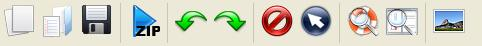

Tool bar
To help the user finding the most relevant operations, the KEEL Experiments software tool provides a tool bar with shortcuts to them.

Most of them also appear in the Menu bar (thus, refer to the Menu bar section to get additional information about them). The only option that does not appears already in the Menu bar is:
Delete: This option allows the user to delete the selected module.